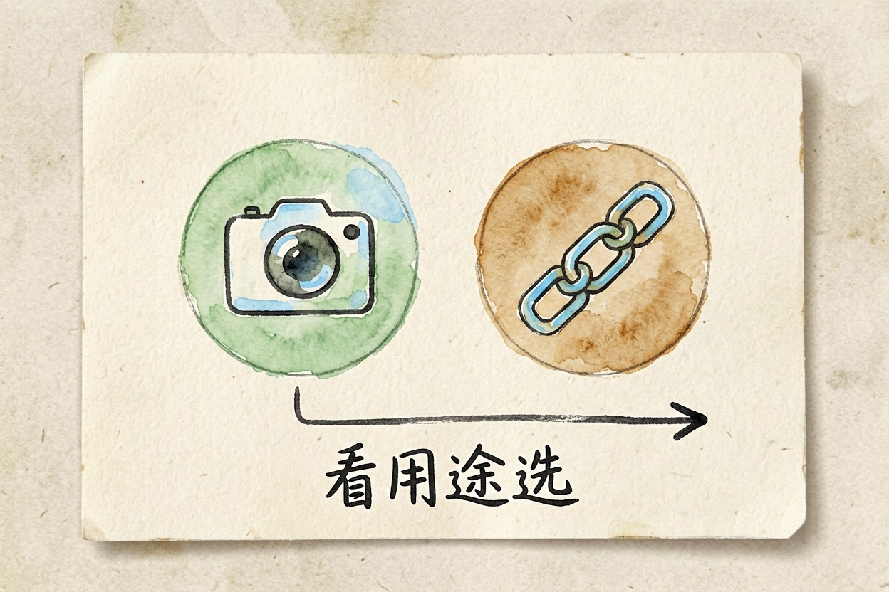
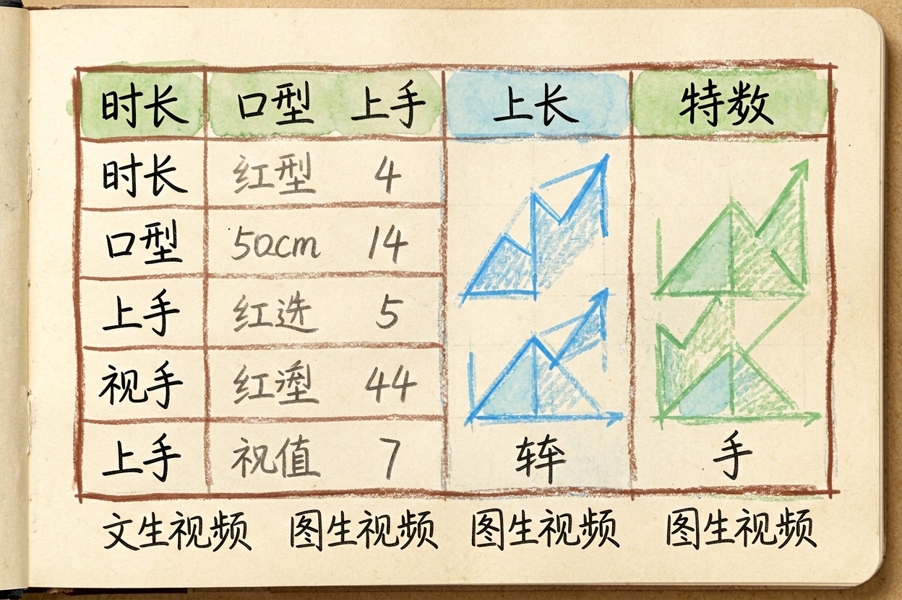
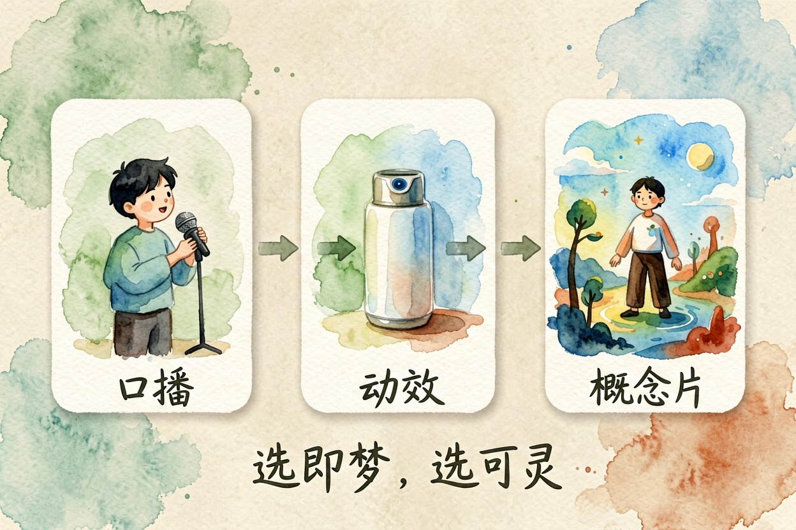
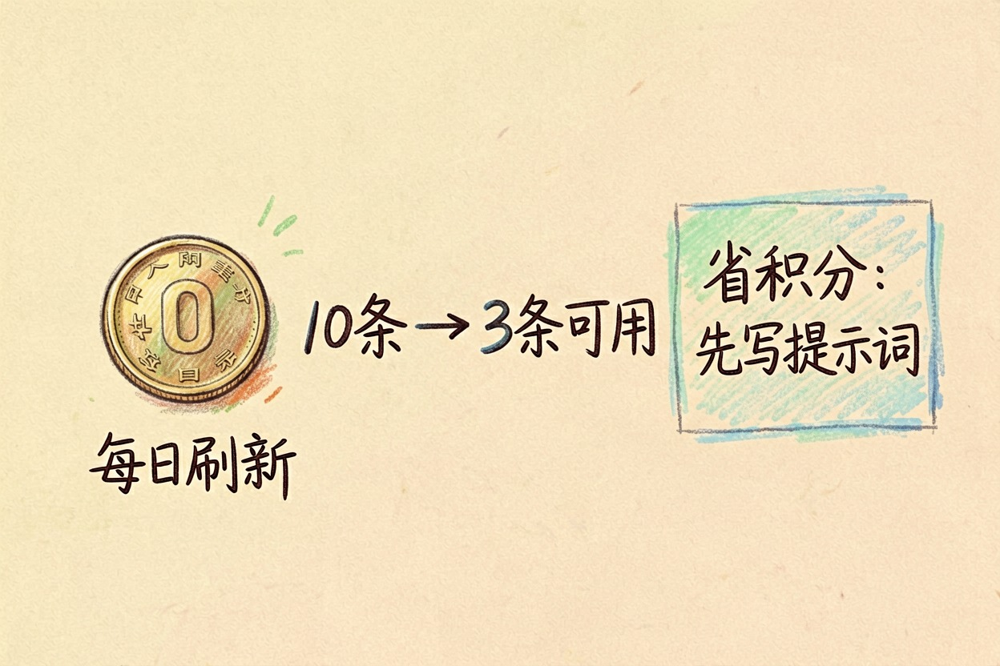
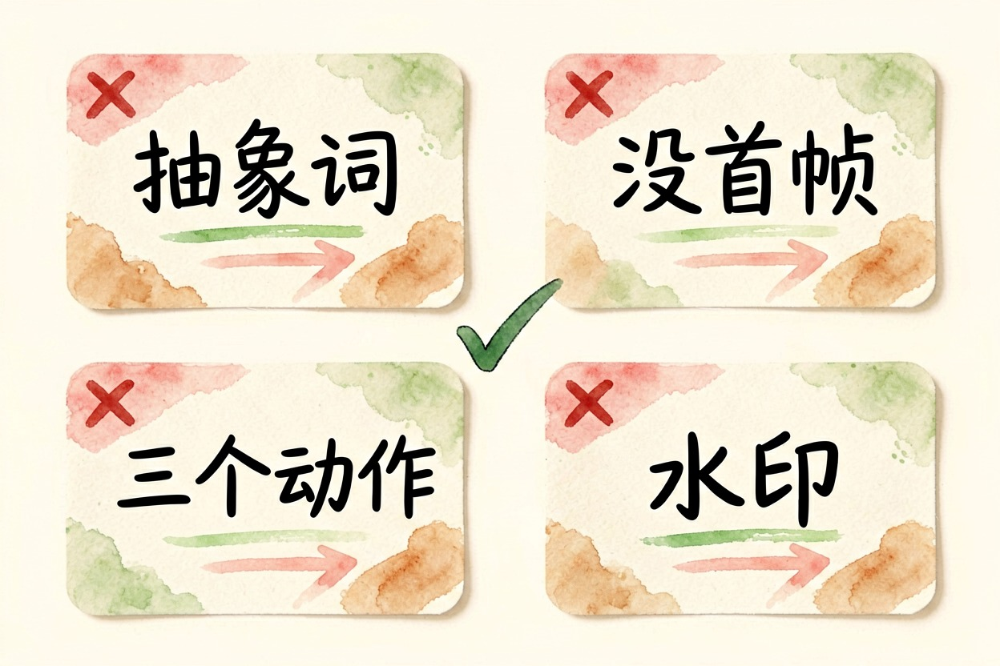

可灵和即梦哪个好？AI 视频生成对比
两个国产 AI 视频工具的差别，不在画质谁高谁低，而在你手上有没有现成的图和脚本。
可灵和即梦哪个好？先给一句话结论

可灵和即梦哪个好，看你要出什么片子。想让画面动得稳、镜头感强，先试可灵；素材已经在手、要快速批量做图生视频、还想顺手接剪辑，先试即梦。
两家定位本来就不同。可灵更像一个专攻视频生成的模型产品，即梦挂在字节的创作生态里，出图、模板、剪辑是一条线。这个赛道全貌，看 AI 视频工具横向对比。
核心对比表

| 维度 | 可灵 | 即梦 |
|---|---|---|
| 文生视频 | 运动幅度大，镜头语言强 | 稳，偏保守，出错少 |
| 图生视频 | 对首帧还原度高 | 与自家出图衔接顺 |
| 时长与分辨率 | 分档提供，长片段偏付费 | 分档提供，短片段易上手 |
| 口型对嘴 | 有对口型能力 | 数字人口播链路更完整 |
| 商用与版权 | 按会员档确认 | 按会员档确认 |
| 免费额度 | 每日刷新积分 | 每日刷新积分 |
| 上手难度 | 中，提示词讲究 | 低，模板多 |
两家的积分和时长档位改得勤，表里只写方向，数字到 Kling 官网 与 Jimeng 官网 核对。
三类用途分别选谁

短视频口播选即梦。 数字人、口播模板、字幕这条链路它更顺，出完直接进剪辑。后期哪些按钮值得开，看剪映 AI 哪些功能值得用。
电商产品动效两家都行。 手上有精修主图、只要轻微旋转和光影流动，即梦更稳；要产品在场景里被人拿起来用，可灵的运动表现更好。
创意概念片选可灵。 大幅运镜、超现实画面、情绪镜头，它崩得少，出来的东西更像片子，而不是会动的图。
做家居的小林拍过沙发主图。她先用即梦跑了六条轻微推镜，挑两条直接上架；后来要一条品牌概念片，才转去可灵重做。
免费额度与出片成本怎么算

两家都是积分制，每天刷新免费额度。真正的成本不在单条标价，在重跑次数。
估算方法很简单：连着跑十条，记下有几条能用。假设三条能用，单条成本就是标价的三倍多。新手第一周的可用率普遍两三成，熟了能提到一半以上。
省积分的诀窍是别拿积分试提示词。先把镜头描述用文字写死，再花积分跑。
四个常见踩坑

提示词太抽象。 「高级感」「大片质感」这类词模型接不住，要写清主体、动作、镜头、光线。这段可以直接改：
主体：（谁 / 什么，穿什么、什么材质）
动作：（只写一个动作，别塞三个）
镜头：（固定 / 缓慢推近 / 环绕，速度写慢）
环境与光线：（时间、地点、光源方向）
风格：（写实 / 胶片 / 动画，别写「高级感」）
节奏：（前 2 秒静态，后 3 秒开始运动）写法还能再抠，看 AI 提示词怎么写。
图生视频没给首帧。 有图就传图，能锁住画面。
一句话塞三个动作。 转身、微笑、举杯同时来，画面必糊。
导出前没看水印和规格。 免费档产出常带水印，商用前先确认授权与分辨率。
积分规则和会员权益变动频繁，以两家官网当天会员页为准。
可灵和即梦哪个好，别指望一个答案通吃：概念片走可灵，口播和电商动效走即梦，两个号都注册，谁的额度没用完就用谁。
本文信息核对于 2026-08-05。AI 产品的价格、免费额度与功能变动频繁，实际以各工具官网当前说明为准。